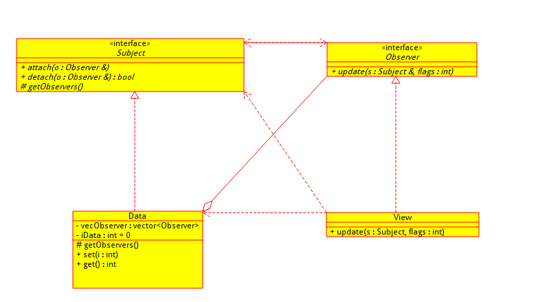

subject.hpp 被观察者接口
#ifndef SUBJECT_H
#define SUBJECT_H
#include <vector>
#include <memory>
#include <algorithm>
#include "observer.hpp"
using namespace std;
class Subject
{
public:
void attach(shared_ptr<Observer> o)
{
getObservers()->push_back(o);
}
bool detach(shared_ptr<Observer> o)
{
auto os = getObservers();
os->erase(find(os->begin(), os->end(), o));
return true;
}
void notify(int flags)
{
auto os = getObservers();
for_each(os->begin(), os->end(),
[this, flags, os](shared_ptr<Observer> &o)
{
o->update(*this, flags);
});
}
virtual shared_ptr<vector<shared_ptr<Observer> > > getObservers() = 0;
};
#endif
observer.hpp 观察者接口
#ifndef OBSERVER_H
#define OBSERVER_H
class Subject;
class Observer
{
public:
virtual void update(Subject &s, int flags) = 0;
};
#endif
data.hpp 观察者：
#ifndef DATA_H
#define DATA_H
#include "subject.hpp"
class Data : public Subject
{
public:
Data()
: vecObserver(new vector<shared_ptr<Observer> >)
, iData(0)
{
}
virtual shared_ptr<vector<shared_ptr<Observer> > > getObservers()
{
return vecObserver;
}
void set(int i)
{
iData = i;
notify(0);
}
int get()
{
return iData;
}
private:
shared_ptr<vector<shared_ptr<Observer> > > vecObserver;
int iData;
};
#endif
view.hpp 观察者
#ifndef VIEW_H
#define VIEW_H
#include "subject.hpp"
#include "observer.hpp"
#include "data.hpp"
class View : public Observer
{
public:
virtual void update(Subject &s, int flags)
{
printf("change %d\n", ((Data *)&s)->get());
}
};
#endif
main.cpp 测试
#include <memory>
#include "subject.hpp"
#include "data.hpp"
#include "observer.hpp"
#include "view.hpp"
using namespace std;
int main()
{
shared_ptr<Data> data(new Data);
shared_ptr<View> view(new View);
data->attach(view);
data->attach(shared_ptr<View>(new View));
data->set(123);
return 0;
}
把接口都放在hpp里，能减少代码文件数量（cpp放到hpp中）
编译的时候为了加快速度，可以用ccmake
